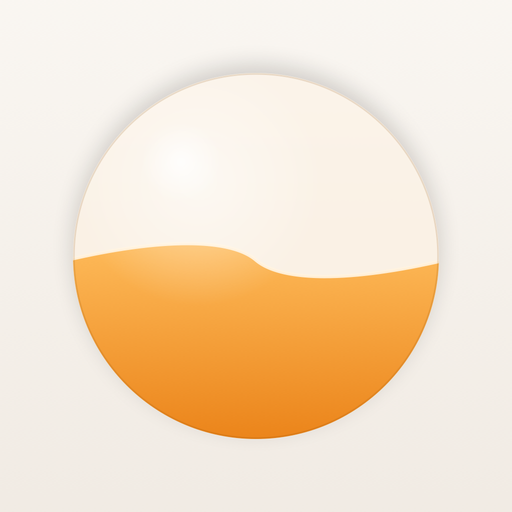

Everything you need to cover RESERVE — fact sheet, story angles, quotes, and downloadable assets. For interviews or additional materials: briankq@icloud.com.
| App name | RESERVE: Metabolic HUD |
| Developer | Brian Khan Quintana — solo developer & physician (MD), San Diego, California |
| Price | Free · no account · no ads · no data collection |
| Platforms | iPhone + Apple Watch (widgets, Control Center, Siri, Live Activity) |
| Languages | English, Spanish, Chinese (Simplified), French, German, Japanese |
| Released | 1.0 — June 2026 · 1.1 "whole-metabolism" update — July 2026 |
| App Store | apps.apple.com/app/id6772624785 |
| Website | drkq.github.io/reserve-site |
| Contact | briankq@icloud.com |
RESERVE turns your metabolism into something you can actually see: a living orb of fuel that fills when you eat and drains as your body burns — through meals, walks, fasting windows, and sleep. Built single-handedly by a physician, it replaces the spreadsheet-with-guilt formula of traditional diet apps with something radically kinder: it never punishes a weigh-in, stays silent when the scale blips upward (water masks change — the app knows the difference), and reshapes itself around six life chapters, from cutting and bulking to pregnancy and recovery modes that hide weight and calories entirely. It's free, fully localized in six languages, deeply accessible (VoiceOver, sonified Audio Graph charts, Dynamic Type), and collects nothing: no account, no server, no ads.
Click for full resolution (1320 × 2868). Free to use in editorial coverage.

Download 512 × 512 · Download 1024 × 1024
Please don't alter, recolor, or restyle the icon.
"I've watched patients cry over what a tracking app said to them. Software shouldn't do that. RESERVE is my answer: an app that shows you your metabolism honestly, celebrates what's real, and never — ever — makes you feel worse for stepping on a scale."
— Brian Khan Quintana, MD, creator of RESERVE
{kind=link}
{kind=link}
{kind=link}
{kind=link}
{kind=link}
{kind=link}